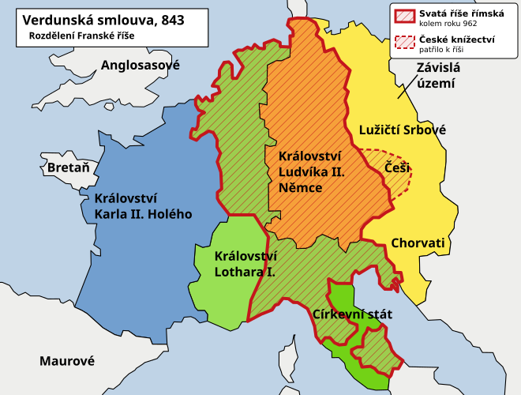
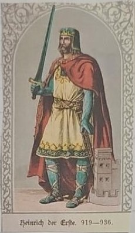
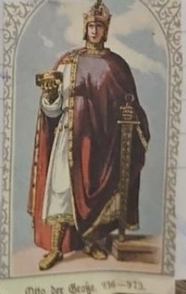
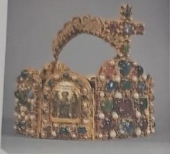

919–1356
Svatá říše římská
Z východní části Franské říše vznikla roku 962 Svatá říše římská. České země k ní patřily, ale měly vlastní panovníky a od roku 1212 dědičné krále.
- 843 Verdunská smlouva: vnuci dělí Franskou říši na tři částii v tématu Franská říše
- 919 Jindřich I. Ptáčník východofranským králem
- 955 Ota I. poráží Maďary na řece Lech
- 962 Ota I. korunován císařem: vzniká Svatá říše římská
- 1085 Vratislav II. první český král (jen pro sebe)
- 1212 Zlatá bula sicilská: dědičný královský titul pro Čechy
- 1356 Zlatá bula Karla IV. určuje sedm kurfiřtů
Vznik říše

Mapa: Wikimedia Commons – Christoph S., Wolpertinger, AdolfPorn, licence CC BY-SA 3.0; doplněno vyznačení Svaté říše římské.

Všechny barevné části mapy dohromady tvořily Franskou říši Karla Velikého. Roku 843 si ji jeho tři vnuci rozdělili:
- modrá – západ: Karel Holý → z toho později Francie,
- zelená – střed: Lothar I. → pás od Severního moře do Itálie,
- oranžová – východ: Ludvík Němec → Východofranská říše, z ní později vznikla Svatá říše římská (dnešní Německo).
Žlutá území (i Češi) nepatřila přímo do říše, ale byla na Francích závislá.
Červeně je vyznačena Svatá říše římská kolem roku 962: celý východní díl (Ludvík Němec), k tomu sever Lotharova dílu (Lotrinsko) a severní Itálie. Patřilo k ní i České knížectví (čárkovaně).


Po rozdělení Franské říše roku 843 se její východní část vyvíjela jako Východofranská říše. V 10. století se zde prosadili panovníci z Otonské (Liudolfovské) dynastie.
- Jindřich I. Ptáčník (919–936) upevnil královskou moc a bojoval s Maďary i slovanskými sousedy.
- Jeho syn Ota I. Veliký se stal králem roku 936.
- Roku 955 zvítězil Ota I. nad Maďary v bitvě na řece Lechu.
- Roku 962 byl Ota I. v Římě korunován císařem. Tento rok je tradičním mezníkem vzniku Svaté říše římské.
České země a říše
České knížectví bylo s římskoněmeckými panovníky provázáno politicky i mocensky, zároveň mělo vlastní vládnoucí dynastii a velkou míru vnitřní autonomie. Vratislav II. získal roku 1085 královský titul (korunován 1086), ale jen pro svou osobu. Roku 1212 potvrdila Zlatá bula sicilská dědičný český královský titul.
Kdo byli kurfiřti?

Kurfiřti byli říšští knížata oprávněná volit římského krále. Tradičních sedm kurfiřtů tvořili tři duchovní a čtyři světští:
| Duchovní | Světští |
|---|---|
| Arcibiskup mohučský | Český král |
| Arcibiskup kolínský | Falckrabě rýnský |
| Arcibiskup trevírský | Vévoda saský |
| Markrabě braniborský |
Pravidla volby kodifikovala Zlatá bula Karla IV. z roku 1356. Je třeba rozlišovat volbu římského krále a císařskou korunovaci: ve středověku to nebylo automaticky totéž.
Dynastie a spor o investituru
Po Otonech vládla v říši nová panovnická rodina, Sálovci. Jeden z nich, císař Jindřich IV., se přel s papežem o to, kdo bude vybírat biskupy. Tomu se říká spor o investituru. Biskupové totiž neměli na starosti jen víru, ale vlastnili i půdu, peníze a vojáky – kdo je vybíral, měl velkou moc.
Zapamatuj si: Císař a papež se hádali, kdo bude vybírat biskupy, protože biskupové měli velkou moc a majetek.
Po Sálovcích vládla další rodina, Štaufové. Nejznámější z nich byl Fridrich I. Barbarossa.
Paměťový obraz
- Řeka, koruna a sedm voličů: Ota I. poráží Maďary na Lechu roku 955, získává císařskou korunu roku 962; později sedm kurfiřtů volí římského krále.
Vyzkoušej se
Odpověz nahlas, teprve pak otevři odpověď. Procvičit náhodně
Co se stalo roku 843 a jak to souvisí se Svatou říší římskou?
Franská říše se rozdělila; z východofranské části později vznikla Svatá říše římská.
Kdo byl Jindřich I. Ptáčník?
Východofranský král, vládl 919–936.
Kdo vyhrál bitvu na Lechu roku 955?
Ota I. Veliký.
Co se stalo v roce 962?
Ota I. byl korunován císařem; vznikla Svatá říše římská.
Kdo byli kurfiřti a kolik jich bylo?
Knížata, která volila římského krále; sedm: tři duchovní a čtyři světští.
Kdo získal roku 1085 královský titul?
Vratislav II., ale jen pro sebe.
Co potvrzuje Zlatá bula sicilská z roku 1212?
Dědičný královský titul českých panovníků.
Jak se jmenuje listina Karla IV. z roku 1356?
Zlatá bula Karla IV.